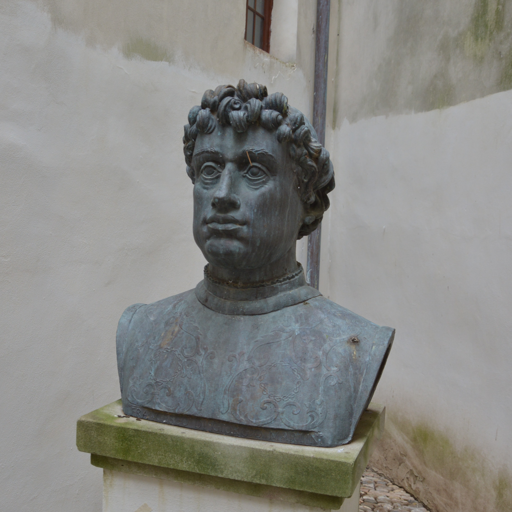

<!DOCTYPE html>
<html lang="en">
<head>
  <meta charset="utf-8">
  <meta name="description" content="ROCCA UBALDINESCA">
  <meta name="author" content="ARCANGELO PRIORE">
  <meta name="viewport" content="width=device-width, initial-scale=1.0, user-scalable=no">
  <title>Potree Viewer – ROCCA UBALDINESCA</title>

  <link rel="stylesheet" href="./build/potree/potree.css">
  <link rel="stylesheet" href="./libs/jquery-ui/jquery-ui.min.css">
  <link rel="stylesheet" href="./libs/openlayers3/ol.css">
  <link rel="stylesheet" href="./libs/spectrum/spectrum.css">
  <link rel="stylesheet" href="./libs/jstree/themes/mixed/style.css">

  <!-- FIX: annotation box semi-transparent (rgba) but image fully opaque -->
  <style>
    /* 1) Ensure annotations are not globally faded by parent opacity/filter */
    .potree_annotation,
    .annotation,
    .annotation-content,
    .potree_annotation_content,
    .annotation-description,
    .ui-dialog .ui-dialog-content {
      opacity: 1 !important;
      filter: none !important;
      backdrop-filter: none !important;
    }

    /* 2) If any overlay pseudo-element is used, disable it */
    .potree_annotation::before,
    .annotation::before,
    .annotation-content::before,
    .potree_annotation_content::before,
    .annotation-description::before {
      content: none !important;
      opacity: 0 !important;
      background: transparent !important;
    }

    /* 3) Apply semi-transparent background WITHOUT reducing children opacity */
    .potree_annotation,
    .annotation,
    .annotation-content,
    .potree_annotation_content,
    .annotation-description {
      background: rgba(20, 20, 20, 0.78) !important; /* box transparency */
      color: #fff !important;
      border: 1px solid rgba(255, 255, 255, 0.12) !important;
      border-radius: 10px !important;
    }

    /* 4) Force images inside annotations to remain fully opaque and sharp */
    .potree_annotation img,
    .annotation img,
    .annotation-content img,
    .potree_annotation_content img,
    .annotation-description img {
      opacity: 1 !important;
      filter: none !important;
      mix-blend-mode: normal !important;
      -webkit-filter: none !important;
    }
  </style>
</head>

<body>

  <!-- LIBS -->
  <script src="./libs/jquery/jquery-3.1.1.min.js"></script>
  <script src="./libs/jquery-ui/jquery-ui.min.js"></script>
  <script src="./libs/spectrum/spectrum.js"></script>
  <script src="./libs/other/BinaryHeap.js"></script>
  <script src="./libs/tween/tween.min.js"></script>
  <script src="./libs/d3/d3.js"></script>
  <script src="./libs/proj4/proj4.js"></script>
  <script src="./libs/openlayers3/ol.js"></script>
  <script src="./libs/i18next/i18next.js"></script>
  <script src="./libs/jstree/jstree.js"></script>
  <script src="./build/potree/potree.js"></script>
  <script src="./libs/plasio/js/laslaz.js"></script>

  <!-- CONTAINER -->
  <div class="potree_container" style="position:absolute; width:100%; height:100%; left:0; top:0;">
    <div id="potree_render_area" style="background-image:url('');"></div>
    <div id="potree_sidebar_container"></div>
  </div>

  <!-- SCRIPT -->
  <script type="module">
    import * as THREE from "./libs/three.js/build/three.module.js";

    // =====================
    // LABELS
    // =====================
    const SASSO_LABEL = "Rocca Ubaldinesca";
    const BUSTO_LABEL = "Focus 1";

    // =====================
    // VIEWER
    // =====================
    window.viewer = new Potree.Viewer(document.getElementById("potree_render_area"));

    viewer.setEDLEnabled(false);
    viewer.setFOV(60);
    viewer.setPointBudget(10_000_000);
    viewer.loadSettingsFromURL();
    viewer.setEDLEnabled(false);
    viewer.setDescription("ROCCA UBALDINESCA");

    if (typeof viewer.setMaxNodesLoading === "function") {
      viewer.setMaxNodesLoading(2);
    } else if (viewer.maxNodesLoading !== undefined) {
      viewer.maxNodesLoading = 2;
    } else if (Potree.maxNodesLoading !== undefined) {
      Potree.maxNodesLoading = 2;
    }

    if (typeof viewer.setMinNodeSize === "function") {
      viewer.setMinNodeSize(0);
    }

    viewer.loadGUI(() => {
      $("#menu_appearance").next().show();
      viewer.setEDLEnabled(false);
    });

    // =====================
    // CONFIG DATASETS
    // =====================
    const SASSOCORVARO = {
      base: "./pointclouds/sassocorvaro",
      tiles: 20,
      pcs: [],
      materials: [],
      visible: true
    };

    const BUSTO = {
      path: "./pointclouds/busto/metadata.json",
      pc: null,
      materials: [],
      visible: true
    };

    // =====================
    // DEFAULT MATERIAL SETTINGS
    // =====================
    const DEFAULTS = {
      rocca: { size: 2.0, minSize: 2.0, type: Potree.PointSizeType.FIXED },
      busto: { size: 2.0, minSize: 2.0, type: Potree.PointSizeType.FIXED }
    };

    function applyMaterialDefaults(pc, materialsArr){
      const mat = pc.material;
      mat.activeAttributeName = "rgba";
      mat.size = DEFAULTS.rocca.size;
      mat.minSize = DEFAULTS.rocca.minSize;
      mat.pointSizeType = DEFAULTS.rocca.type;
      materialsArr.push(mat);
      return mat;
    }

    // =====================
    // UI: TWO SEPARATE POINT-SIZE SLIDERS
    // =====================
    function addPointSizeSliderForGroup(opts){
      const { id, title, materialsRef, initialMaterial } = opts;

      const $appearancePanel = $("#menu_appearance").next();
      if ($appearancePanel.length === 0) {
        setTimeout(() => addPointSizeSliderForGroup(opts), 200);
        return;
      }

      $(`#${id}`).remove();

      const typeToValue = t =>
        t === Potree.PointSizeType.ATTENUATED ? "ATTENUATED" :
        t === Potree.PointSizeType.ADAPTIVE   ? "ADAPTIVE"   : "FIXED";

      const valueToType = v =>
        v === "ATTENUATED" ? Potree.PointSizeType.ATTENUATED :
        v === "ADAPTIVE"   ? Potree.PointSizeType.ADAPTIVE   :
                             Potree.PointSizeType.FIXED;

      const block = $(`
        <div class="pv-menu-list" id="${id}">
          <div class="pv-menu-entry">

            <div style="font-weight:600; margin-bottom:8px;">${title}</div>

            <div style="display:flex; justify-content:space-between; margin-bottom:6px;">
              <span>Point size</span>
              <span id="${id}_val">${initialMaterial.size.toFixed(1)}</span>
            </div>

            <div id="${id}_slider" style="margin:0 4px;"></div>

            <div id="${id}_note"
                 style="margin-top:6px; font-size:11px; color:#999; display:none;">
              controlled by distance
            </div>

            <div style="display:flex; justify-content:space-between; margin-top:8px;">
              <span>Size mode</span>
              <select id="${id}_type" style="width:140px;">
                <option value="FIXED">Fixed</option>
                <option value="ATTENUATED">Attenuated</option>
                <option value="ADAPTIVE">Adaptive</option>
              </select>
            </div>

          </div>
        </div>
      `);

      const $firstBlock = $appearancePanel.find(".pv-menu-list").first();
      $firstBlock.after(block);

      $(`#${id}_type`).val(typeToValue(initialMaterial.pointSizeType));

      $(`#${id}_slider`).slider({
        min: 0.5,
        max: 10,
        step: 0.1,
        value: initialMaterial.size,
        slide: (e, ui) => {
          materialsRef.forEach(m => { m.size = ui.value; });
          $(`#${id}_val`).text(ui.value.toFixed(1));
        }
      });

      function applyMode(mode){
        const $slider = $(`#${id}_slider`);
        const $note = $(`#${id}_note`);

        const t = valueToType(mode);
        materialsRef.forEach(m => { m.pointSizeType = t; });

        if (mode === "ATTENUATED") {
          $slider.slider("disable");
          $note.show();
          return;
        }

        $slider.slider("enable");
        $note.hide();

        if (mode === "ADAPTIVE") {
          $slider.slider("option", "max", 3);
          if ($slider.slider("value") > 3) {
            $slider.slider("value", 3);
            materialsRef.forEach(m => { m.size = 3; });
            $(`#${id}_val`).text("3.0");
          }
        } else {
          $slider.slider("option", "max", 10);
        }
      }

      applyMode(typeToValue(initialMaterial.pointSizeType));

      $(`#${id}_type`).on("change", function(){
        applyMode($(this).val());
      });
    }

    // =====================
    // SPECIAL VIEW STATE (DECLARE EARLY)
    // =====================
    let specialViewActive = false;

    // =====================
    // INITIAL FIT
    // =====================
    let bustoLoaded = false;
    let tilesLoaded = 0;

    let fitQuickDone = false;
    let fitFinalDone = false;

    function tryInitialFit(){
      if (specialViewActive) return;

      if (!fitQuickDone && bustoLoaded && tilesLoaded >= 1) {
        fitQuickDone = true;
        viewer.fitToScreen();
      }
      if (!fitFinalDone && bustoLoaded && tilesLoaded >= SASSOCORVARO.tiles) {
        fitFinalDone = true;
        viewer.fitToScreen();
      }
    }

    // =====================
    // DYNAMIC QUALITY WHILE NAVIGATING
    // =====================
    const QUALITY = {
      moving: { pointBudget: 2_500_000 },
      still:  { pointBudget: 10_000_000 }
    };

    function applyQuality(q){
      viewer.setPointBudget(q.pointBudget);
    }

    if (viewer.controls && typeof viewer.controls.addEventListener === "function") {
      viewer.controls.addEventListener("start", () => applyQuality(QUALITY.moving));
      viewer.controls.addEventListener("end",   () => applyQuality(QUALITY.still));
    }

    // =====================
    // LOAD CLOUDS
    // =====================
    let didInitBustoSlider = false;
    let didInitSassoSlider = false;

    // --- BUSTO (single)
    Potree.loadPointCloud(
      BUSTO.path,
      BUSTO_LABEL,
      e => {
        const pc = e.pointcloud;

        const mat = pc.material;
        mat.activeAttributeName = "rgba";
        mat.size = DEFAULTS.busto.size;
        mat.minSize = DEFAULTS.busto.minSize;
        mat.pointSizeType = DEFAULTS.busto.type;

        BUSTO.materials.push(mat);

        pc.visible = BUSTO.visible;
        viewer.scene.addPointCloud(pc);
        BUSTO.pc = pc;

        if (!didInitBustoSlider) {
          didInitBustoSlider = true;
          addPointSizeSliderForGroup({
            id: "ap_pointsize_busto",
            title: "Point size (Busto)",
            materialsRef: BUSTO.materials,
            initialMaterial: mat
          });
        }

        bustoLoaded = true;
        tryInitialFit();
      }
    );

    // --- TILES (batch)
    async function loadSassocorvaroTilesWithLimit(limit = 3){
      let i = 1;

      async function loadOne(idx){
        return new Promise(resolve => {
          const name = `${SASSO_LABEL} – tile ${String(idx).padStart(2, "0")}`;
          const path = `${SASSOCORVARO.base}/tile_${idx}/metadata.json`;

          Potree.loadPointCloud(path, name, e => {
            const pc = e.pointcloud;
            const mat = applyMaterialDefaults(pc, SASSOCORVARO.materials);

            pc.visible = SASSOCORVARO.visible;
            viewer.scene.addPointCloud(pc);
            SASSOCORVARO.pcs.push(pc);

            if (!didInitSassoSlider) {
              didInitSassoSlider = true;
              addPointSizeSliderForGroup({
                id: "ap_pointsize_sassocorvaro",
                title: `Point size (${SASSO_LABEL})`,
                materialsRef: SASSOCORVARO.materials,
                initialMaterial: mat
              });
            }

            tilesLoaded++;
            tryInitialFit();
            resolve();
          });
        });
      }

      const workers = new Array(limit).fill(null).map(async () => {
        while (i <= SASSOCORVARO.tiles){
          const idx = i++;
          await loadOne(idx);
        }
      });

      await Promise.all(workers);
    }

    setTimeout(() => loadSassocorvaroTilesWithLimit(3), 1500);

    // =====================
    // ANNOTATION + VIEW-DEPENDENT SETTINGS
    // =====================

    const SAVED_POS_ARR = [298466.397, 4850600.337, 331.066];
    const SAVED_TGT_ARR = [298465.821, 4850599.263, 330.926];

    const RESTORE_DISTANCE_M = 5.0;

    function setRoccaSpecial(){
      SASSOCORVARO.materials.forEach(m => {
        m.size = 10.0;
        m.minSize = 10.0;
        m.pointSizeType = Potree.PointSizeType.FIXED;
      });

      try {
        $("#ap_pointsize_sassocorvaro_slider").slider("value", 10.0);
        $("#ap_pointsize_sassocorvaro_val").text("10.0");
        $("#ap_pointsize_sassocorvaro_type").val("FIXED");
      } catch (_) {}
    }

    function setBustoSpecial(){
      BUSTO.materials.forEach(m => {
        m.size = 0.7;
        m.minSize = 0.7;
        m.pointSizeType = Potree.PointSizeType.ADAPTIVE;
      });

      try {
        $("#ap_pointsize_busto_slider").slider("value", 0.7);
        $("#ap_pointsize_busto_val").text("0.7");
        $("#ap_pointsize_busto_type").val("ADAPTIVE");
      } catch (_) {}
    }

    function restoreDefaults(){
      SASSOCORVARO.materials.forEach(m => {
        m.size = DEFAULTS.rocca.size;
        m.minSize = DEFAULTS.rocca.minSize;
        m.pointSizeType = DEFAULTS.rocca.type;
      });

      BUSTO.materials.forEach(m => {
        m.size = DEFAULTS.busto.size;
        m.minSize = DEFAULTS.busto.minSize;
        m.pointSizeType = DEFAULTS.busto.type;
      });

      try {
        $("#ap_pointsize_sassocorvaro_slider").slider("value", DEFAULTS.rocca.size);
        $("#ap_pointsize_sassocorvaro_val").text(DEFAULTS.rocca.size.toFixed(1));
        $("#ap_pointsize_sassocorvaro_type").val("FIXED");

        $("#ap_pointsize_busto_slider").slider("value", DEFAULTS.busto.size);
        $("#ap_pointsize_busto_val").text(DEFAULTS.busto.size.toFixed(1));
        $("#ap_pointsize_busto_type").val("FIXED");
      } catch (_) {}
    }

    function goToSavedView(){
      fitQuickDone = true;
      fitFinalDone = true;

      viewer.scene.view.setView(SAVED_POS_ARR, SAVED_TGT_ARR);

      setRoccaSpecial();
      setBustoSpecial();
      specialViewActive = true;

      viewer.render();
    }

    const ann = new Potree.Annotation({
      title: BUSTO_LABEL,
      position: SAVED_TGT_ARR,
      cameraPosition: SAVED_POS_ARR,
      cameraTarget: SAVED_TGT_ARR,
      description: `
        <div style="line-height:1.35; max-width:320px;">
          <div style="font-weight:700; margin-bottom:6px;">
            ${BUSTO_LABEL}
          </div>

          <div style="margin-bottom:8px;">
            <p style="margin:0 0 6px 0;">
              Busto attribuito a <b>Francesco di Giorgio Martini</b>, inserito nel percorso monumentale della Rocca Ubaldinesca di Sassocorvaro.
              Il rilievo fotogrammetrico di dettaglio eseguito consente l’analisi geometrico-dimensionale dell’opera in ambiente digitale.
            </p>
          </div>

          

          <div style="font-size:12px;">
            Fotografia del busto.
          </div>

          <div style="margin-top:6px; font-size:12px;">
            Clicca due volte sull’annotazione per attivare una migliore visualizzazione del Focus dedicato.
          </div>
        </div>
      `
    });

    viewer.scene.annotations.add(ann);

    ann.addEventListener("select", () => goToSavedView());
    ann.addEventListener("click",  () => goToSavedView());
    ann.onClick = () => goToSavedView();

    const SAVED_TGT_VEC = new THREE.Vector3(...SAVED_TGT_ARR);

    setInterval(() => {
      if (!specialViewActive) return;

      const camPos = viewer.scene.view.position;
      const d = camPos.distanceTo(SAVED_TGT_VEC);

      if (d > RESTORE_DISTANCE_M) {
        restoreDefaults();
        specialViewActive = false;
      }
    }, 500);

    window.showBoth = () => {
      SASSOCORVARO.pcs.forEach(pc => pc.visible = true);
      if (BUSTO.pc) BUSTO.pc.visible = true;
    };
    window.showOnlyBusto = () => {
      SASSOCORVARO.pcs.forEach(pc => pc.visible = false);
      if (BUSTO.pc) BUSTO.pc.visible = true;
    };
    window.showOnlySassocorvaro = () => {
      SASSOCORVARO.pcs.forEach(pc => pc.visible = true);
      if (BUSTO.pc) BUSTO.pc.visible = false;
    };
  </script>

</body>
</html>
